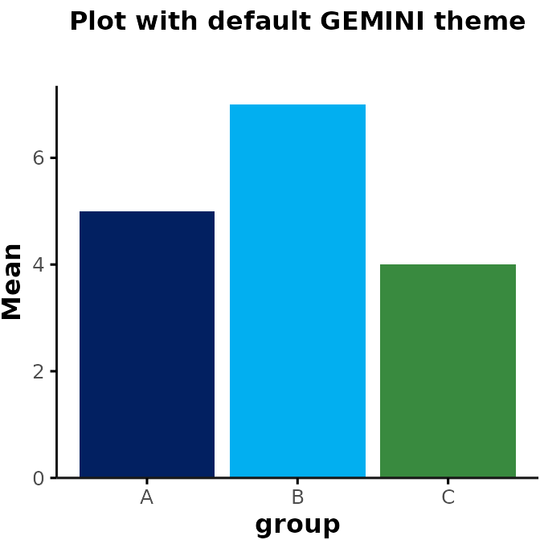
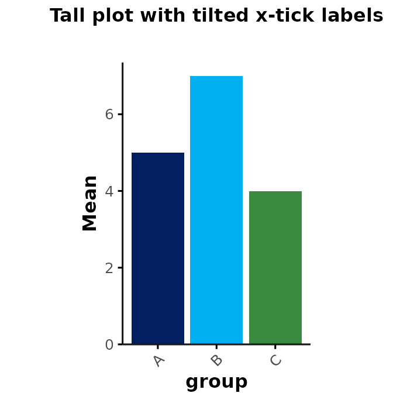

Plotting Functions - Themes & Colors
plotting_theme.RmdIntroduction
This vignette introduces a standardized plotting theme (plot_theme()) and color palettes (gemini_colors()) that users can apply to any ggplot figures they create in their analyses. The goal of these functions is to simplify the process of creating figures with a clean and consistent look. To create publication-ready figures, we recommend that users apply additional customization based on their needs (see section Resources).
Theme for ggplots
Rgemini::plot_theme() adds a simple theme to any
ggplot figures. The theme is based on
ggthemes::theme_foundation(), with some additional tweaks,
and users can easily adjust the theme as needed. By default,
plot_theme() is applied to all other plotting functions in
Rgemini (e.g., plot_summary() and
plot_over_time()).
The following example illustrates the theme applied to a basic
barplot. Note: plot_theme does not change
the bar colors, but only the general plot aesthetics (e.g.,
background/axes/grid/fonts). However, for illustration purposes, we also
add the default color palette from gemini_colors() using
fill here (see section Color
Palettes for more details):
library(Rgemini)
library(ggplot2)
# create example data
my_data <- data.frame(group = c("A", "B", "C"), mean = c(5, 7, 4))
# generate barplot
my_plot <- ggplot(data = my_data, aes(x = group, y = mean, fill = group)) +
geom_bar(stat = "identity", fill = gemini_colors(1)[1:3]) +
scale_y_continuous(name = "Mean", expand = expansion(mult = c(0, .05)))
# original ggplot theme
my_plot + ggtitle("Original plot")
my_plot +
plot_theme() + # add Rgemini plot_theme
ggtitle("Plot with default GEMINI theme")
Additional inputs for plot_theme()
plot_theme() accepts inputs specifying the font
size/type (which are passed to
ggthemes::theme_foundation()). Users can also specify
whether to show major/minor grid lines. For example:
my_plot +
plot_theme(base_size = 15, base_family = "mono", show_grid = c("major", "minor")) +
ggtitle("Mono plot with grid lines")
Additionally, plot_theme() accepts inputs that can be
passed to ggplot2::theme(), which allows for further
customization (see here). For
example, to change the aspect ratio of the plot and angle of the x-tick
labels:
my_plot +
plot_theme(
aspect.ratio = 1.5,
axis.text.x = element_text(angle = 45, hjust = 1)
) +
ggtitle("Tall plot with tilted x-tick labels")
Overwriting plot_theme() settings
If you are specifying inputs for settings that are already defined by
plot_theme(), you will see an error message saying that the
argument was matched by multiple inputs. For example,
plot_theme() already specifies default characteristics for
plot.title (face = "bold"). Thus, if you try
to run the following code to italicize the title, you will see an error
message saying:
my_plot +
plot_theme(plot.title = element_text(face = "italic")) +
ggtitle("Plot with additional theme")Error in theme(plot.title = element_text(face = ‘bold’, size = rel(1), : formal argument ‘plot.title’ matched by multiple actual arguments
To avoid this error, you need to add a separate
ggplot2::theme(), which will overwrite the default
characteristics specified by plot_theme():
my_plot +
plot_theme() +
theme(plot.title = element_text(face = "italic")) +
ggtitle("Plot with italicized title")
GEMINI Color Palettes
Rgemini includes a few custom color palettes that can be
applied to any figures. To view all color palettes, you can run:
“GEMINI Glow” (palette #1) is used as the default color palette.
Colorblind Accessibility
All GEMINI color palettes are designed to be colorblind accessible.
However, within each color palette, certain combinations of colors may
be easier to distinguish than others. If you only need a small subset of
colors, we recommend choosing the ones that are most easily
distinguishable. You can check how colorblind friendly the chosen color
combinations are using the colorBlindness R library or this
website: https://www.color-blindness.com/coblis-color-blindness-simulator/
For example, this simulates how the colors from the “GEMINI Glow” palette (#1) would be perceived by a colorblind person:
library(colorBlindness)
fig <- ggplot(
data.frame(x = as.factor(seq(7, 1))),
aes(x = 1, y = 1, fill = x)
) +
geom_col(position = position_stack(reverse = TRUE), show.legend = FALSE) +
scale_fill_manual(values = gemini_colors(1)) +
coord_flip() +
theme_void() +
theme(
aspect.ratio = 0.3,
plot.title = element_text(hjust = 0)
)
fig + ggtitle("Original")

Selecting GEMINI palettes/individual colors
All hex values for an individual palette can be obtained by running
gemini_colors() with a numeric input (e.g.,
gemini_colors(2) for “Shadowed Spectrum”) or character
input that matches the starting character(s) of a given palette (e.g.,
gemini_colors("S") for “Shadowed Spectrum”).
For example:
set.seed(2)
data <- data.frame(
x = rnorm(50),
y = rnorm(50),
group = sample(c("A", "B", "C", "D", "E"), 50, replace = TRUE)
)
ggplot(data, aes(x = x, y = y, color = group)) +
geom_point() +
plot_theme() +
scale_color_manual(values = gemini_colors(2)) # = gemini_colors("S")
This approach works for figures generated with any R package.
Applying GEMINI colors to ggplots
For figures created with ggplot2, you can also use
scale_fill_gemini() or scale_color_gemini() to
apply the color palettes. For example:
ggplot(data, aes(x = x, y = y, color = group)) +
geom_point() +
plot_theme() +
scale_color_gemini(4) # = gemini_colors("L")
Color palettes from other packages
In addition to the GEMINI color palettes, there are several other packages that create beautiful color palettes for publication-ready figures. Below is a short intro on some of the colorblind friendly options we recommend using. These palettes allow for additional flexibility and customization that is currently not supported by the GEMINI color palettes.
viridis
The viridis color palettes are a set of perceptually uniform color maps designed for scientific visualization. They were developed to address limitations of traditional color maps, which often suffer from uneven brightness or discontinuities in hue. For more details, see here
For example, this is a selection of 7 colors from the “Viridis” palette:
library(viridis)
fig + scale_fill_viridis(discrete = TRUE, option = "viridis")
… or viridis’ “Magma” palette:
fig + scale_fill_viridis(discrete = TRUE, option = "magma")
ggsci
The ggsci package provides a collection of color
palettes specifically designed for scientific journals. These color
palettes are designed to enhance the visual appeal and interpretability
of ggplot2 graphics. For more details, see here.
Some examples of commonly used ggsci palettes
include:
JAMA palette:
library(ggsci)
fig + scale_fill_jama()
Lancet palette:
fig + scale_fill_lancet()
JCO palette:
fig + scale_fill_jco()
RColorBrewer
ColorBrewer is a flexible tool for selecting color schemes. ColorBrewer includes color palettes that are colorblind safe, print friendly, and perceptually uniform. It offers a wide range of colors optimized for different types of data and visualization purposes. For more details, see here.
For example, this illustrates the “PRGn” palette:
library(RColorBrewer)
fig + scale_fill_brewer(palette = "PRGn")
You can explore all colorblind friendly ColorBrewer palettes by running:
display.brewer.all(colorblindFriendly = TRUE)
Resources
- ggplot2 vignette for theme specifications: https://ggplot2.tidyverse.org/reference/theme.html
- a comprehensive guide on ggplot2 & color palettes: https://www.cedricscherer.com/2019/08/05/a-ggplot2-tutorial-for-beautiful-plotting-in-r/
- ggsci color palettes for scientific journals: https://cran.r-project.org/web/packages/ggsci/vignettes/ggsci.html and https://nanx.me/ggsci/articles/ggsci.html
- viridis color maps: https://cran.r-project.org/web/packages/viridis/vignettes/intro-to-viridis.html
- color brewer: https://colorbrewer2.org/#type=sequential&scheme=BuGn&n=3